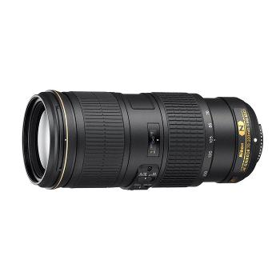

Mon materiel de prédilection


bases de la photo
Lorsqu’on n’y connait rien en photographie, le cadrage est le dernier des soucis et la composition est souvent oub
Or, le fait de bien cadrer et composer une image fait toute la différence entre une photo normale et une photo soignée

Lorsqu’on n’y connait rien en photographie, le cadrage est le dernier des soucis et la composition est souvent oub
e bien cadrer et composer une image fait toute la différence entre une photo normale et une photo soignée.
Encore une fois, cette étape est incontournable et doit faire partie d’un apprentissage sur le terrain sur le long terme.
Lorsqu’on n’y connait rien en photographie, le cadrage est le dernier des soucis

Lorsqu’on n’y connait rien en photographie, le cadrage est le dernier des soucis et la composition est souvent oubliée. Or, le fait de bien cadrer et composer une image fait toute la différence entre une photo normale et une photo soignée. Encore une fois, cette étape est incontournable et doit faire partie d’un apprentissage sur le terrain sur le long terme. Lorsqu’on n’y connait rien en photographie, le cadrage est le dernier des soucis et la composition est souvent oubliée. Or, le fait de bien cadrer et composer une image fait toute la différence entre une photo normale et une photo soignée. Encore une fois, cette étape est incontournable et doit faire partie d’un apprentissage sur le terrain sur le long terme. Lorsqu’on n’y connait rien en photographie, le cadrage est le dernier des soucis et la composition est souvent oubliée. Or, le fait de bien cadrer et composer une image fait toute la différence entre une photo normale et une photo soignée.
Lorsqu’on n’y connait rien en photographie, le cadrage est le dernier des soucis et la composition est souvent oubliée. Or, le fait de bien cadrer et composer une image fait toute la différence entre une photo normale et une photo soignée. Encore une fois, cette étape est incontournable et doit faire partie d’un apprentissage sur le terrain sur le long terme. Lorsqu’on n’y connait rien en photographie, le cadrage est le dernier des soucis et la composition est souvent oubliée. Or, le fait de bien cadrer et composer une image fait toute la différence entre une photo normale et une photo soignée. Encore une fois, cette étape est incontournable et doit faire partie d’un apprentissage sur le terrain sur le long terme. Lorsqu’on n’y connait rien en photographie, le cadrage est le dernier des soucis et la composition est souvent oubliée. Or, le fait de bien cadrer et composer une image fait toute la différence entre une photo normale et une photo soignée. Encore une fois, cette étape est incontournable et doit faire partie d’un apprentissage sur le terrain sur le long terme. Lorsqu’on n’y connait rien en photographie, le cadrage est le dernier des soucis et la composition est souvent oubliée. Or, le fait de bien cadrer et composer une image fait toute la différence entre une photo normale et une photo soignée. Enc